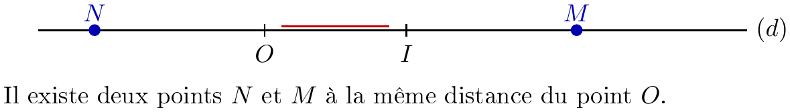
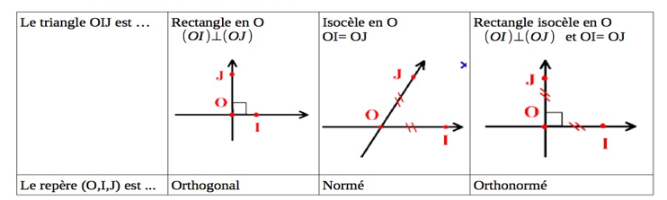
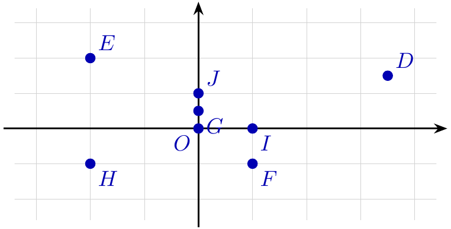
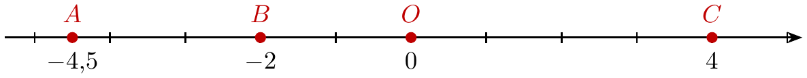
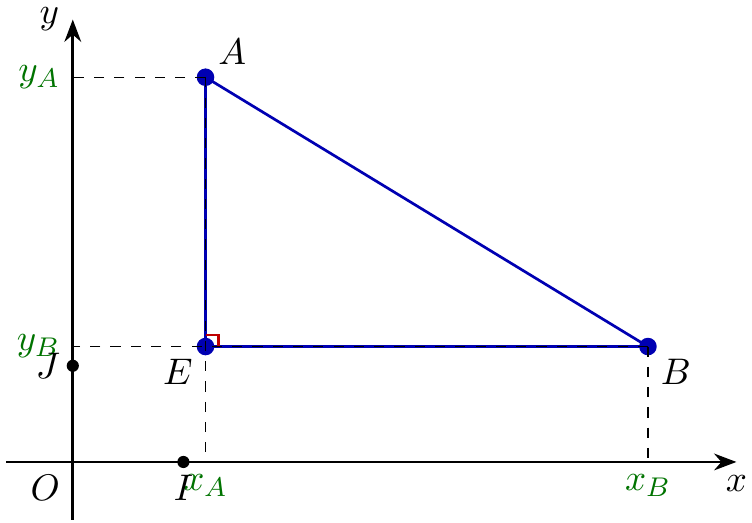
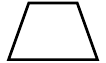
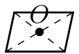
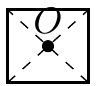
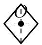
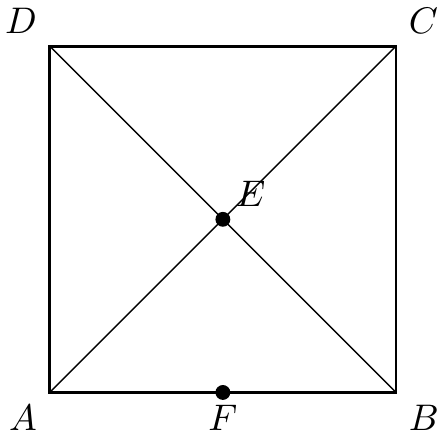

Chapitre 2 : Repérage
Seconde · Chapitre 2 — Repérage · cours de Frederik de Peyrelongue
I. Repères et coordonnées
1.1 Se repérer sur une droite
Soit $(d)$ une droite et $O$ un point de la droite $(d)$. Soit $M$ un point de cette droite $d$.
- Condition nécessaire pour repérer un point $M$ sur la droite $d$ : il faut avoir une distance unité $OI$ afin de déterminer la distance du point $M$ au point $O$. Pour tout point $M$ de la droite $(d)$, il existe un unique nombre réel $d$ tel que $OM=d\times OI$.
- La distance $OI$ n'est pas une condition suffisante pour repérer le point $M$ : on peut trouver $2$ points à égale distance du point $O$.

À tout point $M$ de la droite, on associe un unique réel $x$ tel que : $x=d$ si $M\in[OI)$ et $x=-d$ si $M\notin[OI)$.
Il faut donc ajouter à l'unité un sens de déplacement : par convention, on choisit positif de $O$ vers $I$.
- Le couple $(O\,;I)$ est appelé repère d'origine $O$ de la droite $(d)$.
- Le réel $x$, associé au point $M$, est appelé abscisse du point $M$ dans le repère $(O\,;I)$.
1.2 Se repérer dans un plan
Un repère du plan est défini par trois points $(O\,;I\,,J)$ non alignés. $O$ est appelé origine du repère, la droite $(OI)$ axe des abscisses et la droite $(OJ)$ axe des ordonnées. On pose $OI=OJ=1$ unité.
- Si le triangle $OIJ$ n'est pas rectangle en $O$, le repère est dit quelconque.
- Si le triangle $OIJ$ est rectangle en $O$ et non isocèle en $O$, le repère est dit orthogonal.
- Si le triangle $OIJ$ est rectangle et isocèle en $O$, le repère est dit orthonormé.
Dans un plan, on considère trois points non alignés $O$, $I$, $J$. On distingue les trois cas suivants :

Dans un repère $(O\,;I\,,J)$, tout point $M$ du plan est repéré par un unique couple de nombres réels $\left(x_{M}\,;y_{M}\right)$, appelé coordonnées du point $M$ :
- $x_{M}$ est l'abscisse du point $M$ et $y_{M}$ son ordonnée.
La réciproque est vraie : à tout couple de réels $(x\,;y)$, on associe un unique point $M$ du plan de coordonnées $x$ et $y$.
On considère le repère $(O\,;I\,,J)$ ci-dessous.
- Lire les coordonnées de tous les points apparaissant sur la figure.
- Placer les points $A(-3\,;1)$, $B(2\,;3)$ et $C(4\,;2)$.

II. Coordonnées du milieu d'un segment $[AB]$
Soient deux points $A\left(x_{A}\,;y_{A}\right)$ et $B\left(x_{B}\,;y_{B}\right)$ ; on note $I$ le milieu du segment $[AB]$. Le milieu $I$ du segment $[AB]$ a pour coordonnées
Soit $A(-2\,;3)$ et $B(5\,;2)$. Quelles sont les coordonnées du milieu $I$ du segment $[AB]$ ?
2.1 Symétriques par rapport à un point
Soit $C$ le symétrique du point $A$ par rapport au point $B$ : on a alors $B$ qui est le milieu du segment $[AC]$.
Ainsi, les coordonnées de $C$ vérifient le système $\dfrac{x_{A}+x_{C}}{2}=x_{B}$ et $\dfrac{y_{A}+y_{C}}{2}=y_{B}$.
Donc :
Soient $A(-2\,;1)$ et $B(0\,;2)$ : déterminer les coordonnées de $C$, symétrique de $A$ par rapport au point $B$.
2.2 Parallélogrammes
Un parallélogramme est un quadrilatère dont les diagonales ont le même milieu.
Soient $A(-2\,;1)$, $B(-1\,;3)$ et $C(2\,;3)$ et $D(1\,;1)$ : montrer que $ABCD$ est un parallélogramme.
Soient $A(-2\,;1)$, $B(1\,;1)$ et $C(3\,;2)$ : déterminer le point $D$ tel que $ABCD$ soit un parallélogramme.
Soient les points $A(3\,;1)$, $B(2\,;4)$ et $C(-1\,;3)$. Calculer les coordonnées de :
- $I$, milieu de $[AC]$ ;
- $D$ tel que $ABCD$ soit un parallélogramme.
III. Calculs de distances dans un repère orthonormé
La distance entre $A$ et $B$ est le plus court chemin pour aller de $A$ à $B$. Elle est égale à la longueur du segment $[AB]$.
3.1 Distance entre deux points sur une droite
Pour trouver la distance entre deux points $A$ et $B$ d'une droite graduée, on calcule la différence de leurs abscisses de la manière suivante :
$AB=BA=\text{abscisse la plus grande}-\text{abscisse la plus petite}$, en se rappelant qu'une distance est toujours un nombre positif.
On introduit ici la notion de valeur absolue, notée $|\ |$.
La distance entre les points $A$ et $C$ est égale à $4-(-4{,}5)$, soit $8{,}5$.
La distance entre les points $A$ et $B$ est égale à $-2-(-4{,}5)$, soit $2{,}5$.

3.2 Distance entre deux points dans un repère orthonormé
On considère, dans le plan muni d'un repère orthonormé $(O\,;I\,,J)$, les points $A\left(x_{A}\,;y_{A}\right)$ et $B\left(x_{B}\,;y_{B}\right)$.
La distance entre les points $A$ et $B$ est :
Démonstration :
On raisonne dans le cas de la figure ci-contre, avec $x_{A}<x_{B}$ et $y_{A}>y_{B}$.
On place le point $E$ ayant la même abscisse que $A$ et la même ordonnée que $B$.
Les axes sont perpendiculaires, donc le triangle $AEB$ est rectangle en $E$.
D'après le théorème de Pythagore, $AB^{2}=AE^{2}+EB^{2}$ :

D'où
Dans un repère orthonormé du plan, placer les points $A(3\,;-2)$, $B(-2\,;4)$ et $E(0\,;5)$. Le triangle $ABE$ est-il rectangle ? Justifier la réponse.
On se place dans un repère orthonormé $(O\,;I\,,J)$.
Le point $P$ de coordonnées $(5\,;5)$ appartient-il au cercle de centre $A(1\,;2)$ et de rayon $5$ ?
Le cercle de centre $A$ et de rayon $r$ est l'ensemble des points $M$ du plan tels que $AM=r$.
3.3 Montrer qu'un triangle est rectangle
Soit $A(2\,;-3)$, $B(6\,;-3)$ et $C(6\,;2)$. Quelle est la nature du triangle $ABC$ ?
3.4 Montrer qu'un triangle est isocèle ou équilatéral
On donne $A\left(2\,;2\sqrt{3}\right)$, $B\left(2\,;-2\sqrt{3}\right)$ et $C(-4\,;0)$. Quelle est la nature du triangle $ABC$ ?
3.5 Comment montrer qu'un quadrilatère est particulier
Rappel des propriétés des quadrilatères particuliers
| Trapèze | Parallélogramme | Rectangle | Losange | Carré |
 |  |  |  | |
| Les côtés en gras sont parallèles. Pour les quatre parallélogrammes ci-dessus, $O$ est le centre de symétrie, les droites en pointillés sont les axes de symétrie et enfin, les côtés opposés sont parallèles deux à deux. | ||||
- Le parallélogramme : ses diagonales ont même milieu.
- Le rectangle : ses diagonales ont même milieu et même longueur.
- Le losange : ses quatre côtés ont même longueur.
- Le carré : ses quatre côtés ont même longueur et ses diagonales ont même longueur.
On considère la figure suivante, où $ABCD$ est un carré de centre $E$ et où $F$ est le milieu de $[AB]$.

- Le repère $(A\,;B\,,C)$ est-il orthonormé ? Même question avec les repères $(A\,;B\,,D)$ et $(F\,;B\,,E)$.
- Lire les coordonnées de tous les points de la figure dans le repère $(A\,;B\,,D)$, puis dans le repère $(F\,;B\,,E)$.
Rectangle, carré ou losange ?
Soient $A(2\,;1)$, $B(-2\,;-1)$, $C(-3\,;1)$ et $D(1\,;3)$. Quelle est la nature du quadrilatère $ABCD$ ?
Idée : étudier les propriétés des diagonales !
Soient $A(2\,;1)$, $B(-2\,;-1)$, $C(-4\,;3)$ et $D(0\,;5)$. Quelle est la nature du quadrilatère $ABCD$ ?
Idée : étudier la longueur des côtés du quadrilatère et la longueur de ses diagonales.
IV. Équations de droites élémentaires
4.1 Droite horizontale
L'équation $y=k$ représente l'ensemble des points $M(x\,;y)$ du plan d'ordonnée $k$.
Ce sont tous des points alignés sur une droite horizontale qui passe par l'axe des ordonnées au niveau $k$.
Exemple : $y=4$.
4.2 Droite verticale
L'équation $x=k$ représente l'ensemble des points $M(x\,;y)$ du plan d'abscisse $k$.
Ce sont tous des points alignés sur une droite verticale qui passe par l'axe des abscisses au niveau $k$.
Exemple : $x=4$.
4.3 Droite oblique
L'équation $y=mx+p$ représente l'ensemble des points $M(x\,;y)$ du plan dont l'ordonnée est liée à l'abscisse par la même équation.
Les équations du type $y=mx+p$ sont des équations de droite.
Cette droite passe par le point $(0\,;p)$.
Le paramètre $p$ est l'ordonnée à l'origine.
Le paramètre $m$ est le coefficient directeur de la droite.